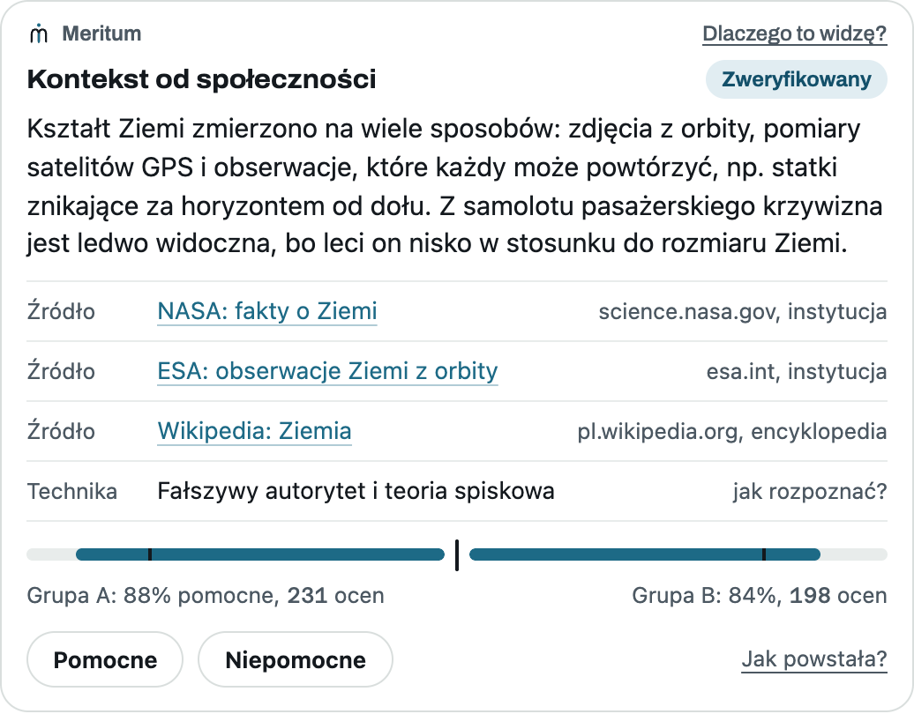

Jeden fejk, cała kampania. Jeden kontekst, ponad podziałami.
Notatka pod postem publikuje się dopiero, gdy zgodzą się ludzie, którzy zwykle się nie zgadzają.

Notatka pod postem publikuje się dopiero, gdy zgodzą się ludzie, którzy zwykle się nie zgadzają.
